青森県出身
「どうせ都会の子のためのプログラムだと思っていた。」
→ 現在は地元・青森で町おこし活動に携わっている
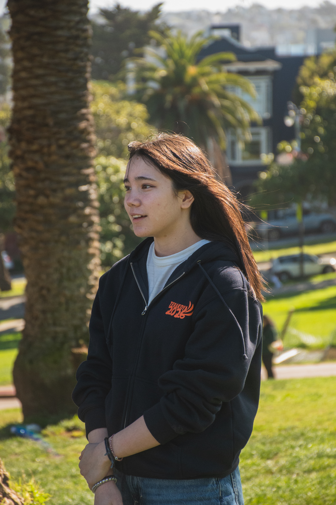
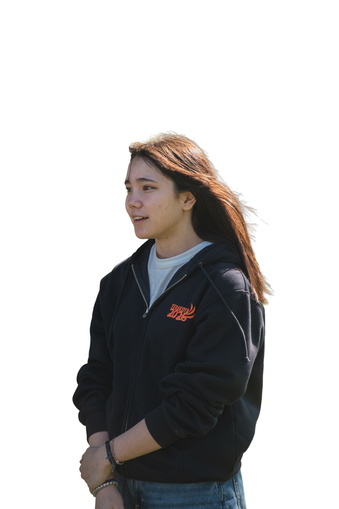
ー挑戦の循環を作る最初の100人
「アメリカに漠然とした憧れがありました。」
空港で本場のファストフードに思いを馳せた。
はっきりと物事を言って初めて伝わると知り、ここでは全て自分の行動次第なのだと気づいた。
アンケートの回答数を見て、初めて自信がついた。興味分野である探求の面白さを知った。
最終日、互いに涙してバディと感謝を伝えあった。
「世界は思っていたより
近かった。」
帰国後、進路が変わった。
国際系学部へ進学。
将来の夢ができた。
そして今、スタッフとして
EdFutureに戻ってきた。
「今度は自分が
次の挑戦者を支えたい。」
そして—EdFuture Founding Partners 100へ。
参加者がスタッフになり、支援者になる。
挑戦の循環が、ここから広がっています。
挑戦は、終わらない。
寄付は支援ではなく、
この循環に加わる「参加」です。
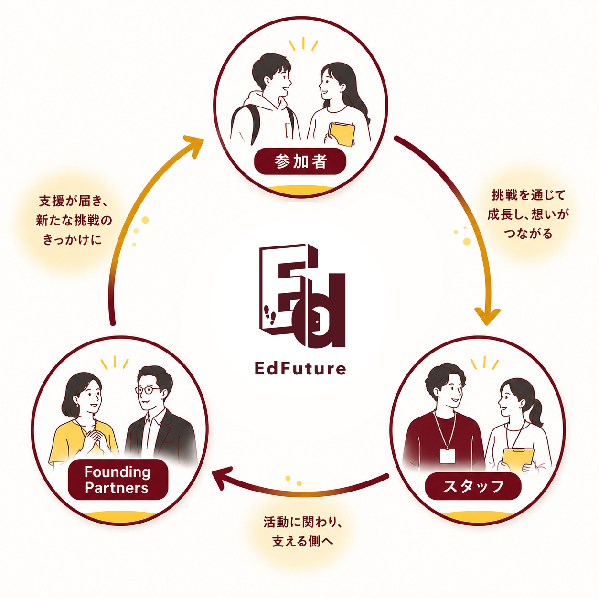
日本の教育の現実
生まれた環境が、挑戦の数を決めている。
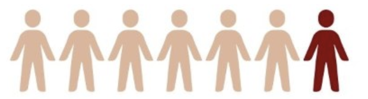
日本の子どもの貧困率は約14%。学びや体験の機会に大きな制限があり、挑戦へのスタートラインに立てない子どもが数多くいます。
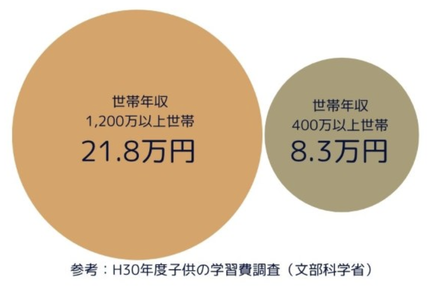
世帯年収1,200万以上の家庭では年間21.8万円、400万以上の家庭では8.3万円。収入の差が、子どもの体験の差に直結しています。
参考：H30年度子供の学習費調査（文部科学省）
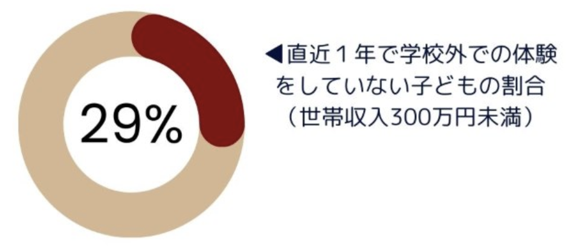
直近1年で学校外の体験活動をしていない子どもの割合。世帯収入300万円未満では約3人に1人が、体験の機会を持てていません。
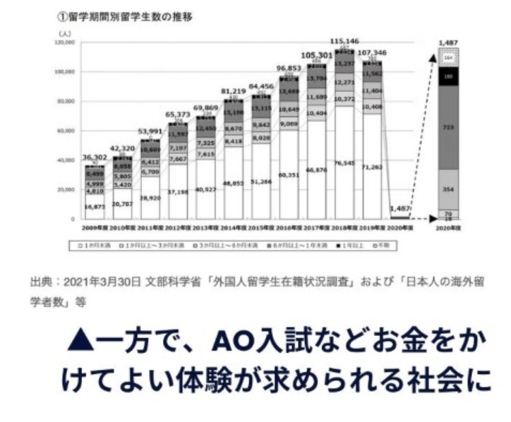
留学経験がAO入試を有利にする一方、地方・低所得家庭の高校生に海外留学は遠い夢のまま。機会の差が、未来の差になっています。
なぜ変われたのか
費用・地域・経験の壁を取り払い、
すべての若者に「挑戦の入口」を届けます。
格安海外留学プログラム
費用の壁を取り払い、地方の高校生・大学生に「海外へ踏み出す最初の一歩」を届けます。奨学金制度（地方枠・無料枠）により、家庭の収入に関わらず参加できる環境を整えています。
オンライン探究学習
場所を問わず参加できる探究プログラム。全国どこからでも世界とつながります。
変化した若者たち
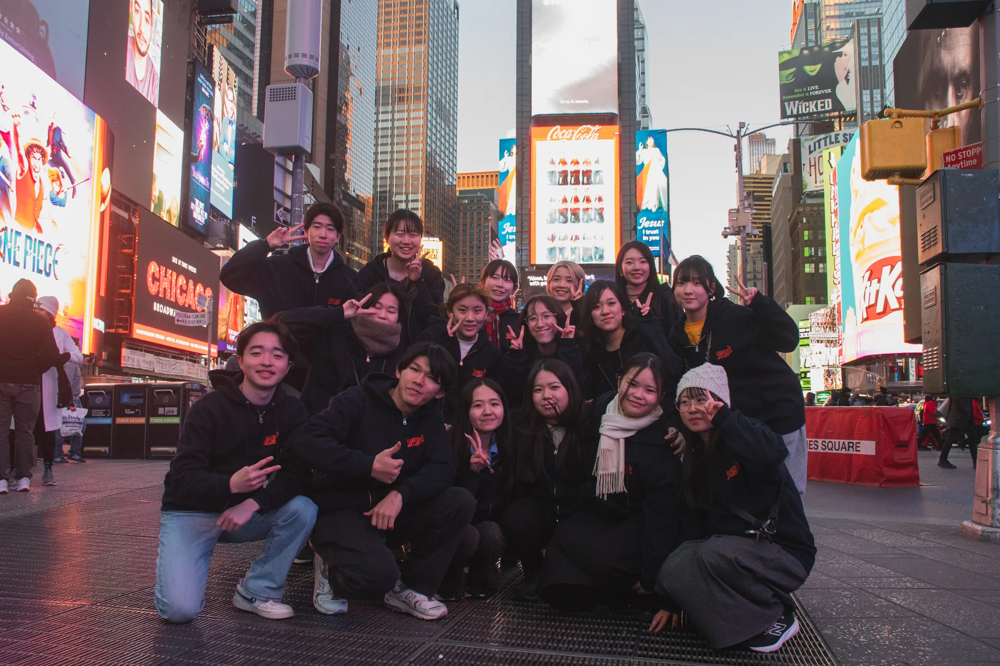
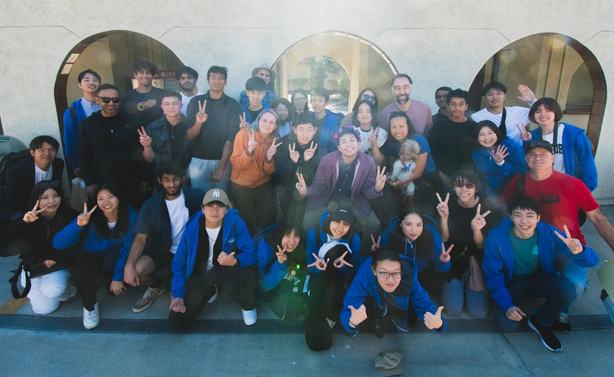
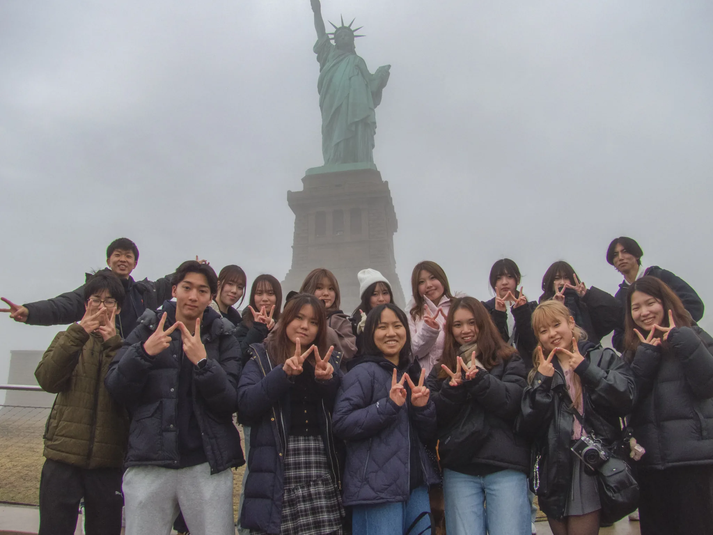
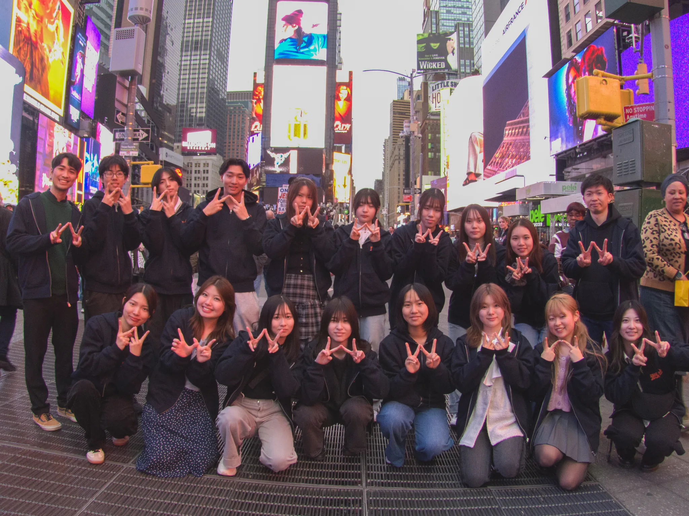
今後につながる声を多数いただいています。
代表メッセージ
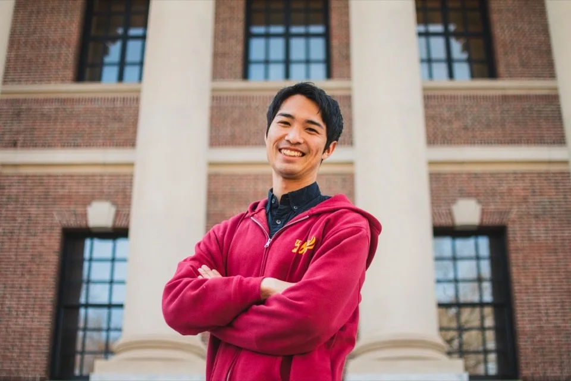
徳永悠馬
アイルランドプロジェクトマネージャー
「挑戦する場をつくり続けたい」
楠美沙子
ボストン②プロジェクトマネージャー
「全員が主役の場をつくりたい」
堀佳月
SFプロジェクトマネージャー
「次の世代に繋いでいきたい」
加藤菜々子
ボストン①プロジェクトマネージャー
「想いをカタチにしたい」
中島真理子
大学生スタッフ
「届けたい人に届けたい」
和田一之介
大学生スタッフ
「」
実績・信頼
104人
これまでに出会った
学生数
60%
が海外初体験
5年
の活動実績
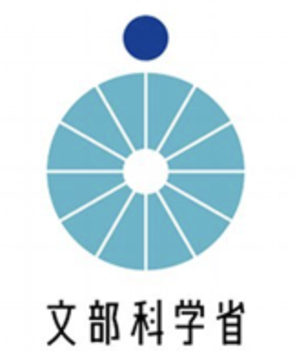
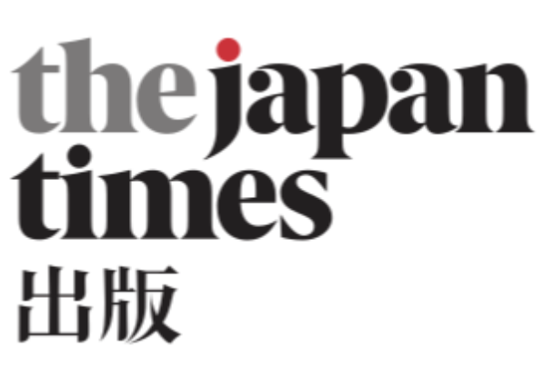
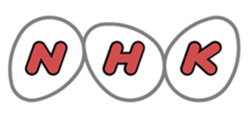
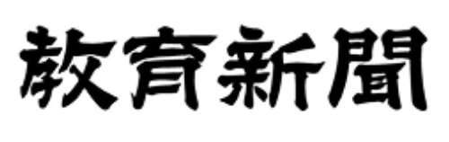
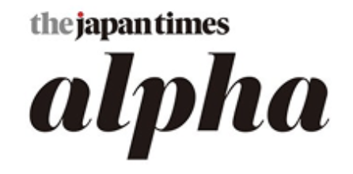
Voices
ワールド寺子屋 2026 / ニューヨーク
「海外なんて自分には関係ないと思っていた。でも、ニューヨークで同世代の人たちと話して、初めて『自分にもできるかもしれない』と思えた。あの一歩が、今の私を作っています。」
A.S. さん（高校2年生・愛知県）
グローバルプロジェクト 2026 / ロサンゼルス
「参加前は英語も自信がなくて、自分が世界と繋がれるとは思っていなかった。でも挑戦してみて、世界はもっと近いと気づいた。支援してくれた人たちに、本当に感謝しています。」
M.K. さん（高校3年生・岩手県）
アイルランドプログラム 2025
「地方に住んでいると、海外は遠い夢だと思っていた。奨学金があったから参加できた。この経験は一生の宝物。次は私が誰かの背中を押せる人になりたい。」
R.T. さん（大学1年生・秋田県）
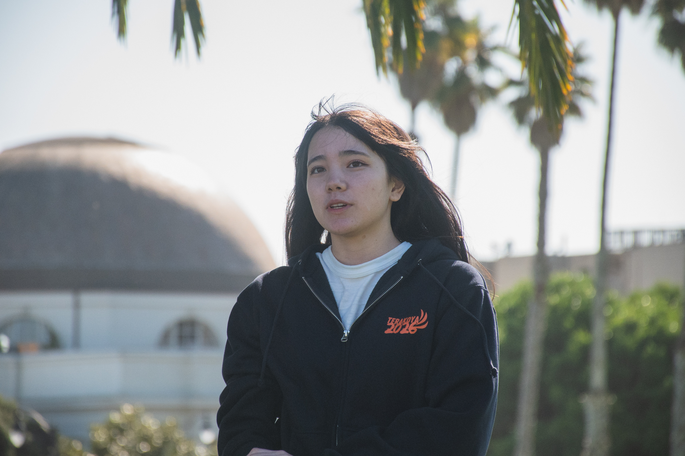
次の挑戦者を迎えたい
この秋、グローバルプロジェクトの10月募集が始まります。来年度はアイルランドプログラムも構想中。奨学金制度（地方枠・無料枠）を整え、次の挑戦者を迎える準備をしています。
約1名の挑戦者を
世界へ送り出せます
※100人達成時・年間換算
約2〜4名の挑戦者を
世界へ送り出せます
※100人達成時・年間換算
ここまで読んでくれたあなたへ。
月1,000円から ○人目の仲間になる支援者の声
保護者・新潟県・50代
「息子が帰国したとき、別人のように目が輝いていました。あの経験を、次の子にも届けたい。その一心で支援を始めました。」
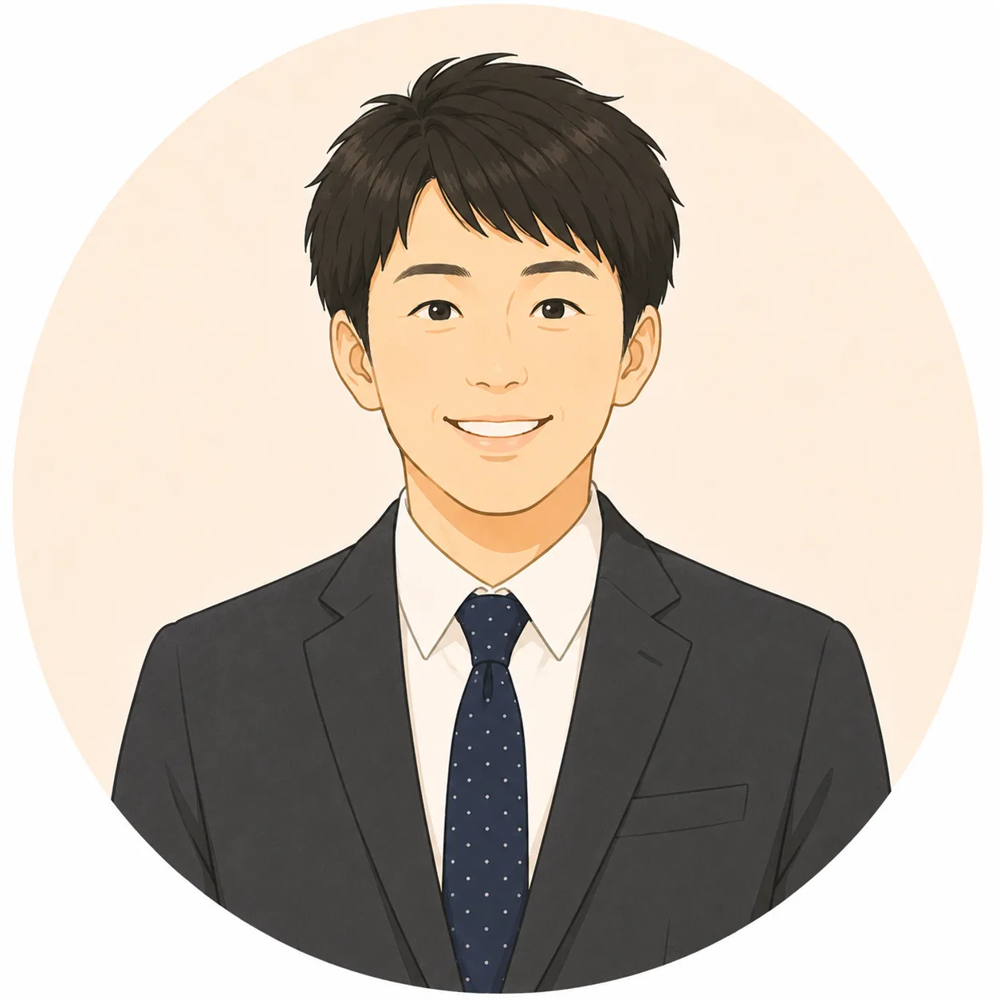
公立高校教員・沖縄県
泉川さん
沖縄県で公立高校の教員をする中で、子どもの貧困や体験格差をリアルに感じる場面が多くありました。例えば部活の大会でも、離島の高校生は本島での大会に交通費や宿泊費の都合で参加できない家庭があります。地域格差によって諦めなければいけない機会が生じてしまう、そんな現実が目の前にあります。
そんなことを考えていたころ、県外の研修で海外の教育現場の先進的な取り組みを学ぶ機会がありました。有意義な時間でしたが、同時にこう思いました。「それならいっそ、子どもたちに海外に行ってもらって、見てきたものを持ち帰ってくれた方が、教育や体験格差は少しずつでも改善していくのではないか」と。
その研修を通じて知り合ったのが、代表の中村さんでした。お話してすぐにパッションを感じました。さらにその後参加したオンライン説明会では、留学のキラキラした面を押し出したプログラムではなく、体験格差の解消を本気で目指していることがよく伝わり、強く共感しました。
現場に立っている先生であれば、地域格差や機会格差、沖縄の貧困の現状に直面し、意識しない先生はいないと思います。ただ、日々目の前の生徒と向き合いながら、教育者という立場で課題解決に大きくコミットしていくことが難しいのも事実です。だからこそ、同じような志を持った方同士が、この寄付を通じて繋がれたら嬉しいと思っています。
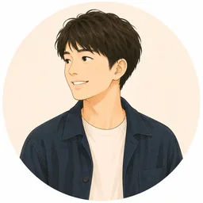
ワールド寺子屋 卒業生・大学生
吉田さん
アルバイトで少しお金を自由に使えるようになったとき、ふと考えました。この出費は、自分の時間や体力を犠牲にして得たお金を使うに値するのか、と。お金が貯まるようになると、今度は「貯めるために自分を犠牲にしている」という感覚に陥りました。
そのとき、自分に投資できないなら、他の人に使ってもらいたいと思ったのが、寄付を考えたきっかけでした。EdFutureに寄付しようと思ったのは、参加者として本当に成長できたこと、そして自分も同じように応援していただいたからです。寄付を必ず最大限に役立てていただけるという確信があり、迷いはありませんでした。
プログラムを通じて視野が格段に広がり、海外を一人旅するなど行動にもつながっています。だからこそ、いずれはすべての学生にこの取り組みを届けてほしいという思いを込めて、支援を続けています。
Founding Partners限定
参加者・スタッフ・寄付者が集うコミュニティへご招待。活動報告、参加者の声、メンバー同士の交流ができます。
プログラムの裏側、参加者の変化、スタッフの挑戦をお届けします。
参加者・卒業生と直接交流できる年に一度の報告会にご参加いただけます。
支援が届いた若者たちから、直接感謝のメッセージが届きます。
目標達成を記念したオリジナルグッズをお届けします。
透明性
よくあるご質問
はい、いつでも解約・停止が可能です。手続きはメールでお気軽にご連絡ください。
はい、単発のご寄付も受け付けております。フォームよりご選択ください。
ご寄付後に領収書を発行いたします。
もちろんです。100人が月1,000円を継続することで、年間120万円の安定した支援基盤となります。小さな一歩が、大きな挑戦を生みます。
80%をプログラム活動費（奨学金・渡航費補助・学習支援）に充て、20%を運営管理費に使用します。詳細は年次活動報告書でご確認いただけます。
ニュースレターや活動報告、イベントを通じて、参加者やプログラムの様子をお届けします。Founding Partners限定のSlackコミュニティでもリアルタイムで情報を共有しています。
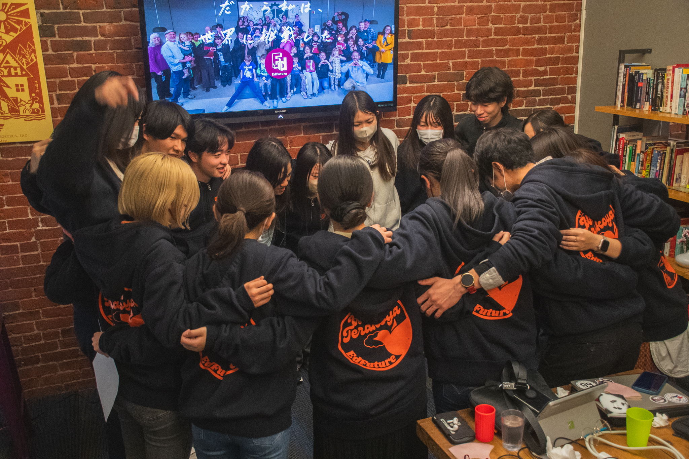
2024年 秋
あなたが今日寄付をすれば、
その子の挑戦が始まるかもしれない。
月1,000円から。いつでも解約可。
\ Founding Partners 100 / 月1,000円〜 寄付するFounding Partners 100 ／ 現在38人参加中
| 団体名 | NPO法人 EdFuture |
|---|---|
| 所在地 | （住所） |
| 設立 | （設立年） |
| 代表者 | （代表理事名） |